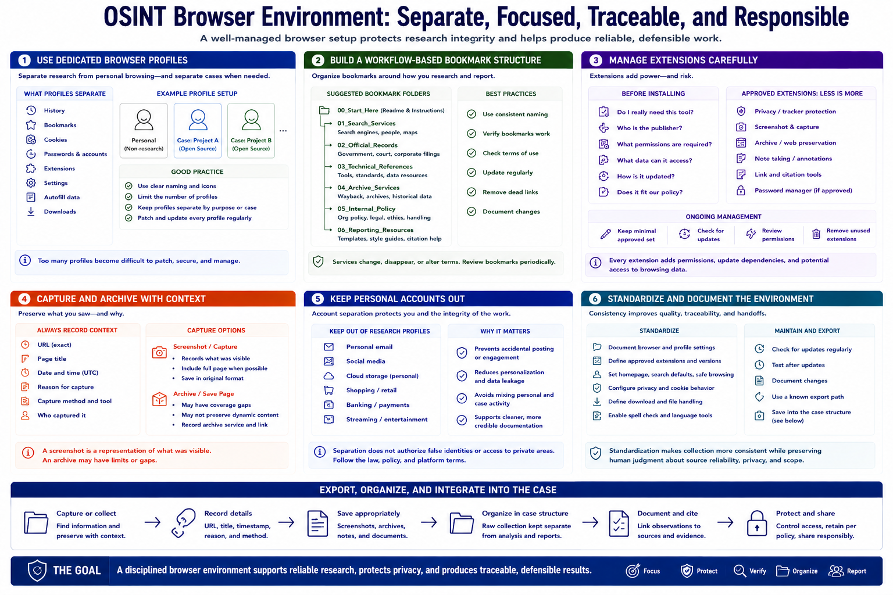

Browser and Research Environment
Connecting to LMS... Progress: in progress

Narration
Dedicated browser profiles separate research history, bookmarks, cookies, settings, and accounts from personal browsing. Profiles can also separate cases when policy requires stronger boundaries, but too many profiles become difficult to patch and manage.
Build a small bookmark structure around workflow: approved search services, official records, technical references, archive services, internal policy, and reporting resources. Review bookmarks periodically because services change, disappear, or alter their terms.
Extensions should be installed carefully. Every extension adds permissions, update dependencies, and potential access to browsing data. Prefer a minimal approved set, verify the publisher and required permissions, and remove tools that no longer provide clear workflow value.
Screenshot and archive tools should preserve source context, not create isolated fragments. Record the URL, title, timestamp, and reason for capture. A screenshot is a representation of what was visible, while an archive may have coverage gaps or preservation limits.
Keep personal email, social, cloud, and shopping accounts out of the research profile. Account separation reduces accidental posting, unwanted personalization, and leakage between personal and case activity. It does not authorize false identities or access to private areas.
Standardize the environment with documented settings, update checks, and a known export path into the case structure. The browser should make collection more consistent while preserving human judgment about source reliability, privacy, and scope.